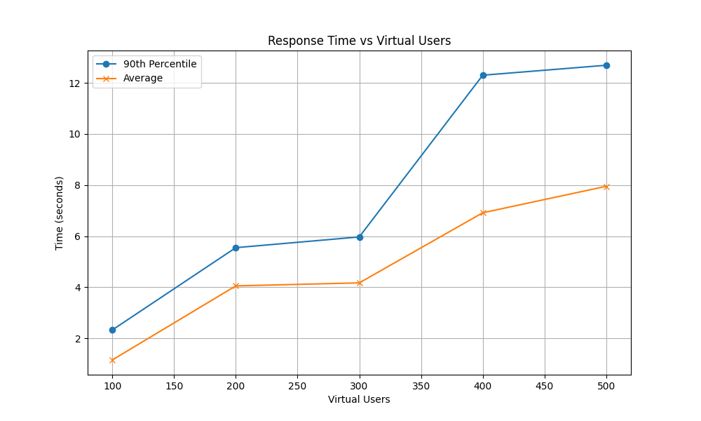
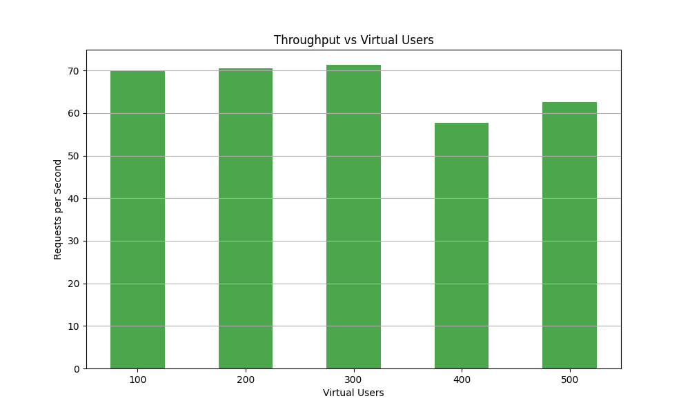

Grading comment: Report on the number of functions considered. Describe the actual workflow.
A small-medium sized company wants to test a conceptual prototype ERP system based in the cloud. Stock of a certain set or arbitrary products is modified by requests made when customers buy and/or return products or administration adding or removing certain items in stock. This request can be made via an already implemented front end that can be rerouted to the cloud-based endpoint, which we may assume has some relevant checks in place to ensure requests are being made by the correct people.
The company would also like to see some form of stock management associated with these requests. To satisfy this requirement, they have requested for someone in the inventory department to be notified when requests are made that drop the stock below some pre-defined threshold for all products. This notification should be triggered after a request has been approved and the transaction has been committed to the database.
Grading comment: Describe 1) the actual solution design; 2) the functions, and 3) their interaction
The proposed solution consists of 2 primary functions that work in conjunction. The primary workflow is initially addressed by a HTTP trigger that is activated when the front-end application contacts the cloud-based endpoint with a JSON file payload. This file contains a list of products to be updated, which includes the product ID and the quantity to append.
When a request is being made, checks within the database are conducted to ensure the request format is correct, products match the request and are in sufficient quantity transaction (i.e. stock must not fall below 0 after committing) before committing to the transaction. If this occurs, the request should be rejected with a suitable warning message. If the request is satisfactory, we append this request to a NoSQL database stored on the cloud and return a success message.
Upon successful completion of the SQL transaction, an Azure cosmos database trigger is activated. This analyses the data appended to the database and check whether any product’s stock quantity has fallen below a threshold. A list is gathered for every updated product and is then send via email to the user set to receive the email alerting them of low stock. The email provides the product ID and the current quantity saved in the database.
For the company to experiment with different stock levels and products, an additional HTTP trigger exists that takes in a username and password to reset the database. This clean copy functionality will take a JSON file saved inside the file structure, drop all entries in the database, and replace it with the contents included in the JSON file. Because this is an admin level task that is not intended to contribute to the prototype but make testing the prototype easier, little data validation is included to provide the company with an opportunity to change the data values to match their requirements.
To assess the runtime of the implementation, we will monitor the average and maximum request duration and response time to evaluate function activity. The performance of the implementation will be measured by monitoring the CPU. We will additionally include error rates and throughput as requests per second to address the question of reliability and scalability as more users are concurrently involved.
Grading comment: Describe 1) the key technologies used, and 2) the implementation decisions.
To implement the functionality, we use python to develop the three functions. Python was chosen for simplicity with its easy-to-understand syntax and compatibility with the Azure ecosystem. While Python may not offer the same performance as some other languages, it is ideal for creating a prototype due to its ease of use and rapid development capabilities. By using this approach, we are able to develop a clear blueprint for the solution, which can later be refined or refactored into a more performant language based on any additional requirements from the company after viewing the prototype and insights gained from the performance metrics.
Our chosen cloud provider is Microsoft Azure. To implement our prototype, each function was created and tested locally in Visual Studio Code before being ready to deploy to the Azure function app. This has been successfully deployed and each of the two HTTP triggers can be invoked given the respective URL. Input of JSON-formatted document easily made when copy-pasting this document into the body section when in the coding and testing portal on Azure. If the job is successful, a status code of 200 is returned, and any issues related to data formatting and ID matching returns a 400 code. Given a code 200 response, the Cosmos database is updated automatically and the trigger is activated to successfully retrieve the updated stock of products to then send an email to a registered email account if the threshold is met.
In terms of the key technology used, we make use of a cloud-based NoSQL database known as Azure Cosmos. Choosing this came down to the idea that a product’s data values can be unique to the product and can be frequently changed over time (e.g. changing stock and pricing), something that a NoSQL database handles well. They can also be scaled horizontally and have low latency, especially considering the database falls within the same resource group as the function app. Other technologies include the use of SendGrid, an API used for programmatic sending of emails. We use this to send out the stock alert to the registered user, given a registered email address on the SendGrid website. It should be known that this email can be sent to junk.
As for the implementation decisions, we opt to contain all three functions within one function app. This comes down to simplicity in developing the prototype and less administrative work attempting to handle multiple instances of function apps. We also choose this path as the primary workflow should tend to, theoretically, equally scale according to the number of users and products. We also consider the fact that the Cosmos trigger is not always being activated to send an email, just to check stock levels, meaning its workload is intermittent and should not significantly impact the scalability of the function app.
Other implementation decisions involve the use of Azure’s load testing functionality to assess the performance and runtime metrics for different sets of users. Opting for this approach gives an accurate, real-life scenario of the workflow in action on a cloud hosted server, while also providing the necessary metrics needed to assess the functions and workflow as a whole. Our load testing function is configured to run with 50 to 250 concurrent users with 2 engines and results displayed in 50 user increments.
Grading comment: Explain the aspect of scalability in the context of your workflow. Describe the key performance metrics. Interpret the actual results.
Analysing the runtime metrics, the workflow tends to perform worse as the system deals with more users. We see this within the response time graph, noting how the 90th percentile response time increases from 2.33 seconds for 100 users to 12.69 seconds for 500 users, and the mean response time increases from 1.15 seconds to 7.95 seconds. This may show signs of the system being unable to keep up with high concurrent users past the 300-user mark, where a near to doubling in response time is noted. We also note the request duration between users follows this similar trend of increasing with user load. This suggests that the workflow’s latency rises under heavier usage, another sign of limited performance under high loads.

Figure 1: Response Time vs Concurrent Virtual Users
Assessing the performance metrics, we see an initial average of 4.5% CPU used, which decreases down to 2.27% by 300 users and levels off beyond that range. A possible hypothesis is that the workflow is not CPU-bound but is likely constrained by other resources, such as I/O or network limitations, when trying to scale to multiple users. The reason for an initial spike in CPU performance may be architecture based, as when running tests prior to this set, the CPU tended to spike for other tests with no notable changes other than time and date (running tests in quiet hours vs possible peak hour times which kicks in backup legacy systems).

Figure 2: Throughput (RPS) vs Concurrent Virtual Users
The throughput and error rates also follow this similar trend of degraded performance after 300 virtual users. The throughput dips slightly from around 70 requests per second to 60 at the 400-user mark, and hover around that range for the 500-user mark. The error rate also spikes up at the 500-user mark to a rate of 0.12%. While this may be negligible compared to the rest of the results, it should be noted that errors appeared to be elevated when running the higher number user tests repeatedly, suggesting a small amount of instability as the user count increases.
Overall, we can conclusively say that the current implementation does not scale well when the user count exceeds 300 users. This is likely due to some form of bottleneck within the Azure servers as we are not bound by compute resources. The response time and request duration fall below suitable target to aim for past the 300-user mark, and performance (via throughput) and reliability (via error rate) of the whole workflow may drop if too many concurrent users are active on this workflow. Depending on the requirements of the company, the 300 concurrent users should be satisfactory to fulfil their requirements as it provides a throughput of 70 request per second with low response time (6 seconds), however if optimisations are required, we may look towards using a hierarchal structure rather than a directly linear structure to write to the database, reducing file size and therefore I/O operations considerably.
| Virtual users | 90th percentile response time | Average Response time | Request duration (average) | Request Duration (max) | Throughput (Requests per second) | Average CPU usage (%) | Error percentage |
|---|---|---|---|---|---|---|---|
| 100 | 2.33 | 1.155 | 1.39 | 19.65 | 69.99 | 4.49 | 0.02 |
| 200 | 5.55 | 4.054 | 2.8 | 31.91 | 70.5 | 2.64 | 0.02 |
| 300 | 5.97 | 4.172 | 3.96 | 47 | 71.35 | 2.27 | 0.07 |
| 400 | 12.3 | 6.916 | 8.08 | 27.63 | 57.75 | 2.3 | 0.02 |
| 500 | 12.69 | 7.952 | 8.48 | 27.63 | 62.53 | 2.37 | 0.12 |